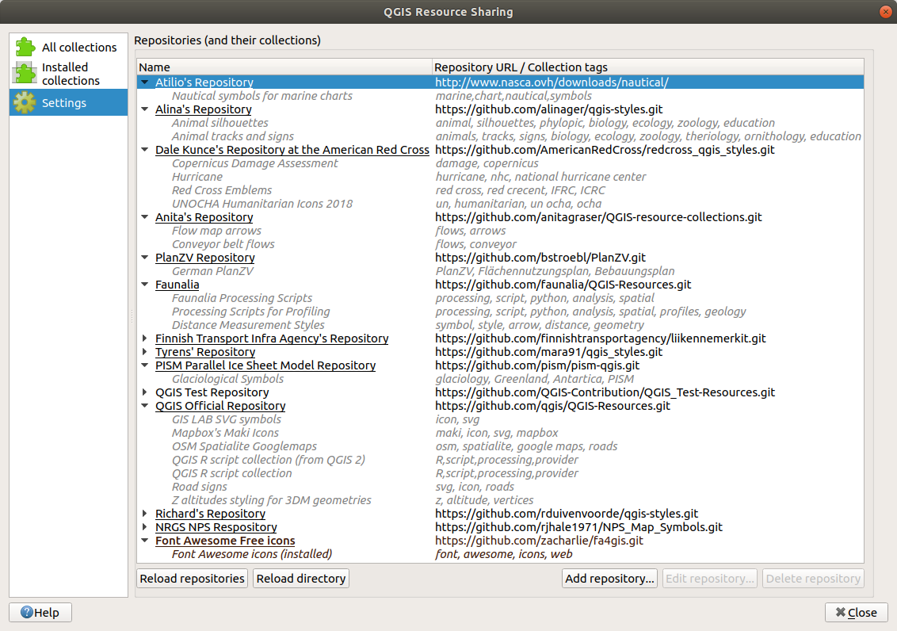
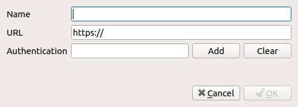

Adding a repository¶
The officially approved QGIS Resource Sharing repositories and their collections should be listed in the Settings tab when you have clicked the Reload Repositories button, as illustrated in the screenshot below.

You can add other repositories by clicking the Add repository... button and specify a Name for the repository (you are free to call it whatever you like, as long as the name is unique) and its URL (remember to use https for github and similar repositories).
If authentication is needed to access the repository, Add the configuration.

If the repository is successfully added, you can now also see its collections in the All collections tab and install them from there.
The table below lists the types of repositories that can be added.
Type |
URL Example |
Description |
|---|---|---|
GitHub |
Works only for public repositories |
|
GitLab |
Works only for public repositories |
|
Bitbucket |
Works only for public repositories |
|
File system |
file:///home/gisuser/dev/repositories/qgis_resources |
Pointing to the repository root in your local file system HTTP(s) with zip collections |
Adding a repository (and loading one or more of its collections) means that a copy of the repository will be placed in the local file system (under resource_sharing/repositories in the QGIS user directory).